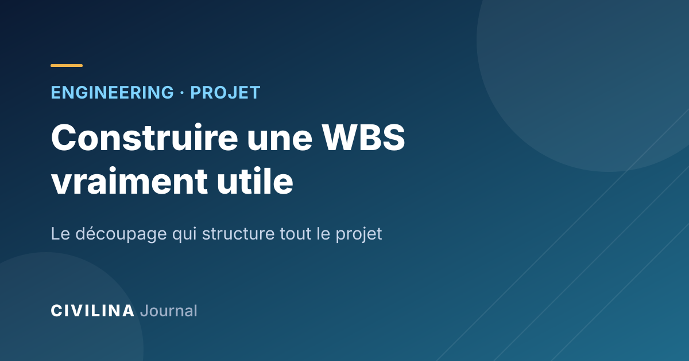

Accueil › Journal › Construire une WBS utile
Engineering · ProjetConstruire une WBS utile : le découpage qui structure tout le projet

Planning, budget, responsabilités, contrôles qualité, avancement : tout, dans un projet, s'appuie sur une même question. Qu'avons-nous exactement à livrer, et comment ce travail se découpe-t-il ? La WBS, ou structure de découpage du projet, y répond. Bien construite, elle devient la colonne vertébrale du projet. Mal construite, elle n'est qu'un schéma de plus. Voici comment en faire un outil utile.
Qu'est-ce qu'une WBS ?
La WBS (Work Breakdown Structure), parfois appelée structure de découpage du projet ou organigramme des tâches, est une décomposition hiérarchique de l'ensemble du travail à réaliser pour livrer le projet. En haut, le projet entier ; en dessous, ses grandes parties ; puis des éléments de plus en plus fins, jusqu'aux lots de travaux que l'on peut estimer, planifier, confier et contrôler.
Elle ne doit pas être confondue avec deux autres outils :
| Outil | Ce qu'il décrit |
|---|---|
| WBS | Quoi : le périmètre du projet, découpé en livrables et lots de travaux |
| Planning | Quand : les activités nécessaires pour réaliser chaque lot, leurs durées et leurs liens |
| Organigramme projet | Qui : les personnes et les équipes, leurs rôles |
Les trois se croisent : chaque lot de la WBS est réalisé par des activités du planning et confié à un responsable de l'organigramme. C'est ce croisement qui rend le projet pilotable.
Les règles qui font une bonne WBS
- La règle des 100 % : la WBS couvre la totalité du périmètre, et rien de plus. Chaque niveau représente exactement 100 % du niveau supérieur. Ce qui n'est pas dans la WBS n'est pas dans le projet.
- Pas de recouvrement : un même travail n'apparaît qu'à un seul endroit, sinon il sera compté et payé deux fois.
- Des livrables plutôt que des actions : les éléments sont nommés par des noms (« fondations », « note de calcul de la charpente ») plutôt que par des verbes. Les verbes appartiennent au planning.
- Un niveau de détail adapté : trois à cinq niveaux suffisent pour la plupart des projets ; au-delà, la WBS devient illisible.
- Une construction collective : la WBS se construit avec les responsables des études, des achats et des travaux, pas seule au bureau du chef de projet.
Choisir le découpage du deuxième niveau
Le choix le plus structurant est celui du deuxième niveau, juste sous le projet. Trois logiques sont courantes :
| Logique | Adaptée quand… | Exemple de branches |
|---|---|---|
| Par phase | Le projet enchaîne des phases bien distinctes, comme dans un contrat EPC | Études, approvisionnements, construction, mise en service |
| Par ouvrage ou zone | Le projet comporte plusieurs ouvrages ou bâtiments indépendants | Bâtiment A, bâtiment B, voiries, réseaux |
| Par lot ou discipline | Les travaux sont répartis entre corps d'état ou sous-traitants | Gros œuvre, charpente, second œuvre, lots techniques |
On combine souvent deux logiques : par exemple les phases au deuxième niveau, puis les ouvrages au troisième. L'important est de rester cohérent dans une même branche, et de choisir la logique qui correspond à la façon dont le projet sera réellement piloté et facturé.
Jusqu'où descendre : le lot de travaux
Le niveau le plus bas de la WBS est le lot de travaux (work package). Un lot bien dimensionné respecte quelques critères simples :
- il a un seul responsable ;
- on peut en estimer le coût et la durée avec une précision raisonnable ;
- on peut en mesurer l'avancement, idéalement par des quantités ou des livrables acceptés ;
- il correspond à un ensemble de contrôles identifiables dans l'ITP ;
- il n'est ni trop gros pour être suivi, ni trop petit pour valoir la peine d'être géré séparément.
Si un lot nécessite plusieurs responsables, il est probablement trop gros. Si le suivi d'un lot coûte plus d'effort que le lot lui-même, il est trop petit.
Exemple type : un bâtiment
Voici un extrait simplifié de WBS pour un bâtiment de bureaux réalisé par une entreprise générale :
| Code | Élément | Niveau |
|---|---|---|
| 1 | Bâtiment de bureaux | Projet |
| 1.1 | Études d'exécution | Phase |
| 1.1.1 | Plans de structure | Lot |
| 1.1.2 | Plans des lots techniques | Lot |
| 1.2 | Approvisionnements | Phase |
| 1.2.1 | Aciers et béton | Lot |
| 1.2.2 | Menuiseries et équipements | Lot |
| 1.3 | Gros œuvre | Phase |
| 1.3.1 | Terrassements et fondations | Lot |
| 1.3.2 | Structure du rez-de-chaussée | Lot |
| 1.3.3 | Structure des étages | Lot |
| 1.4 | Second œuvre et lots techniques | Phase |
| 1.5 | Voiries et réseaux | Phase |
| 1.6 | Réception et dossier des ouvrages exécutés | Phase |
| 1.7 | Management de projet | Phase |
Deux branches sont souvent oubliées : la réception et le dossier des ouvrages exécutés, qui demandent un vrai travail en fin de projet, et le management de projet lui-même, qui consomme des ressources et doit apparaître pour respecter la règle des 100 %.
Codifier pour relier tout le projet
Chaque élément de la WBS reçoit un code unique et hiérarchique (1, 1.3, 1.3.2…). Ce code devient la référence commune de tout le projet :
- les activités du planning sont rattachées à un lot ;
- le budget et les dépenses sont imputés par lot ;
- la matrice RACI désigne un responsable par lot ;
- les ITP, les PV et les non-conformités portent le code du lot concerné ;
- le registre des risques rattache chaque risque au lot qu'il menace.
Avec un code commun, on peut enfin répondre à des questions simples : où en est le lot 1.3.2, combien a-t-il coûté, quels contrôles restent ouverts, quels risques le concernent ? Sans lui, chaque outil parle sa propre langue.
Le dictionnaire de la WBS
Un intitulé de quelques mots ne suffit pas à définir un lot. Le dictionnaire de la WBS précise, pour chaque lot :
| Rubrique | Contenu |
|---|---|
| Description | Ce que le lot comprend, et ce qu'il ne comprend pas |
| Livrables | Ce qui sera remis ou réalisé |
| Responsable | La personne qui répond du lot |
| Critères d'acceptation | Comment on saura que le lot est terminé et accepté |
| Estimation | Coût et durée prévus, et leurs hypothèses |
| Interfaces | Les autres lots dont il dépend ou qui dépendent de lui |
Le dictionnaire évite les discussions de fin de projet du type « ce n'était pas prévu dans notre lot ». C'est aussi un excellent support pour les contrats de sous-traitance.
Faire évoluer la WBS sans perdre le fil
Une WBS approuvée devient la référence du périmètre. Elle évolue pourtant au fil du projet : avenant, ouvrage ajouté, lot redécoupé pour un nouveau sous-traitant. Trois règles évitent la confusion :
- toute modification passe par une demande de changement, avec son impact sur les coûts, les délais et la qualité ;
- un code supprimé n'est jamais réutilisé pour un autre lot, afin de ne pas mélanger les historiques ;
- chaque version de la WBS est datée et conservée, pour pouvoir comparer le périmètre initial et le périmètre final.
Les erreurs fréquentes
- Confondre la WBS avec le planning, et y mettre des activités au lieu de livrables.
- Oublier des parties du périmètre : études, réception, documentation, management.
- Faire apparaître le même travail dans deux branches.
- Descendre à un niveau de détail impossible à suivre.
- Construire la WBS seul, sans les responsables des études et des travaux.
- Utiliser des codes différents dans le planning, le budget et les documents qualité.
Checklist
- La WBS couvre 100 % du périmètre, y compris études, réception et management.
- Aucun travail n'apparaît dans deux branches.
- Les éléments sont des livrables, nommés par des noms.
- La logique du deuxième niveau correspond à la façon dont le projet sera piloté.
- Chaque lot a un responsable unique et un avancement mesurable.
- Chaque élément a un code unique, utilisé par le planning, le budget et la qualité.
- Le dictionnaire de la WBS décrit chaque lot.
- La WBS de référence est approuvée et ses modifications sont tracées.
Une bonne WBS se reconnaît à ce qu'on l'utilise tous les jours sans y penser : chaque document, chaque dépense et chaque contrôle y trouvent naturellement leur place.
- ISO 21511 — Structures de découpage du projet et du programme (lignes directrices sur la WBS).
- ISO 21502 — Management de projet, de programme et de portefeuille — Recommandations sur le management de projet.
- Project Management Institute — bonnes pratiques de décomposition du périmètre (WBS et dictionnaire de la WBS).
L'exemple présenté est simplifié et illustratif. Consultez l'édition en vigueur des normes auprès de leur éditeur officiel. PMI est une marque du Project Management Institute.

Ingénieur civil et PMP, fondateur de Civilina. Expérience en management de projet, qualité, QHSE et coordination opérationnelle, en Algérie et à l'international.
Une WBS qui relie planning, budget et qualité ?
CIVILINA Engineering construit avec vous la WBS et son dictionnaire dans le cadre de votre guide de gestion de projet. CIVILINA IA peut en préparer un premier brouillon structuré, à valider par vos équipes.
Découvrir CIVILINA Engineering →